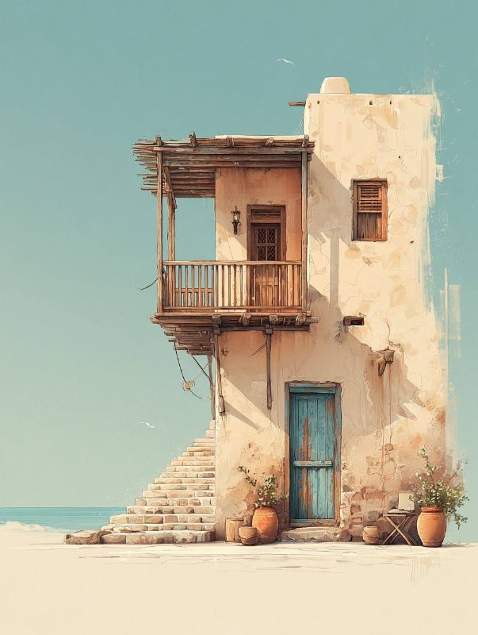

Gunohkorga maktub

Kel, hamdard. Sen bilan bir dardlashaylik.
Azizim, men farishta emasman. Farishta bo‘lishga da’voyim ham yo‘q. Qop-qora tuproqdan yaralgan odamning zurriyodiman. Ustiga-ustak, aslim biram badbo‘y va yoqimsiz suvdan.
Boshqalarni ayblash va gunohkorlardan nafratlanishni ahli zuhdga qoldiramiz. Ular bu ishni qoyillatishadi. Ular sen bilan meni sharmandayi sharmisor qilishni, aybu gunohlarimizni olamga yoyib, malomat mag‘zavasini ustimizdan ag‘darib, iloji bo‘lsa, olomonni to‘plab, avval ur-kaltak, sur kaltak qilib, keyin toshbo‘ron qilishni juda xohlashadi. Peshonada shu bo‘lsa, ko‘ramiz. Endi biz ahli zuhd va ahli taqvo bo‘lgan ul sharif zotlar singari aslzodayu sohibi karomat emasmiz, ular kabi onadan hozirgina tug‘ilgan go‘dakdek pok-pokiza emasmiz, aksincha, usti-boshimiz axlat, balchiq, zulm najosatiga qorishgan bechoralarmiz.
Ahli taqvoga minbarlarni beraylik, ular qolallohu va qola Rasululloh deb lazzatlansinlar. Ahli zuhdga ziyofatlar to‘ri va davralar taxtini topshiraylik, va’zu nasihatlar qilib, mastu mustag‘raq bo‘lsinlar! Ul sohibi karomatlarga olomonning chuvillashib chopishiyu, etagu yelkalarini tavof qilishni qoldiraylikki, bundan cheksiz bir yengillik ila osmonlarda parvoz etsinlar.
Bizga oyoqosti va ostonalar bo‘lsin, poyabzallarga qorishib yotaylik. Bizga xarobotu vayronalar tegsin, o‘rgimchak to‘rlariga o‘ranib uxlaylik. Ko‘zimizga kishilarning bigiz barmoqlari sanchilsin, ta’nayu dashnomlari, yuzlarini nafrat ila chirt burib, sen ham odammisan deya o‘tishlari bo‘lsinu, biz g‘arib bo‘lgan ko‘yi indamaylik.
Zotan, bu olamning soxta bayramlariyu yasama hashamatlarining qaysi bir haqiqatdan darak beradi? Kimning savobu tavbasini Xudoga ma’qul deb ayta olasanu, qaysi gunohu isyonni mardud deya olasan? Xudo sajdaga qo‘yilgan qaysi peshonalarni jahannamga hukm qilishiyu, qaysi tug‘yonkor va osiylarni jannat ila siylashidan aniq xabaring bormi?
Siymolaridan haybatu salobat yog‘ilganning ibodatlarini rad etib, borliqlaridan ma’siyat lovullab, har bir kunlari isyonning zulmatida o‘tgan bechoralarning gunohlari rahmati ilohiy ila siylansa, kimning haddi sig‘adiki, bu xato demoqqa!
Maxluqlar ko‘zidagi biror martaba Haqning rahmatiga kafolatnoma bo‘lmas ekan, yaratiqlarning tilidagi qaysi tahqir jahannamning yo‘llanmasi deb ayta olasan?!
Ey gunohkor!
Bir guruh odamlar safarga chiqdilar. Yo‘llari ajib gulzoru bog‘lardan o‘tdiyu, ittifoqo, qop-qora va sassiq bir botqoqqa duch keldilar. Hammalari shu botqoqqa quladilar. Botqoqdan bir amallab chiqib, biroz yurardilar-da, yana balchiqqa botardilar. Botqoqning narigi tomonidan chiroyli kiyingan boshqa odamla ularning ustlaridan kular, yordam berishni istamas va yordam bersak, balchiqlari tegadi deya jirkanardilar. Bu holdan balchiqqa cho‘kkanlarning dillari vayron bo‘lur edi.
Shunda ularning ichidan biri yaxshilik ham, yomonlik ham Xudodandir, ey Xudoyim, bizni bu botqoqdan qutqar deb qattiq iltijo qildi. Shunda Xudo uning diliga umid va quvvat soldi. U barcha botganlarga aytdiki, hammangiz bir-biringizning qo‘llaringizni mahkam ushlangiz! Shu tariqa botqoq ichida bir zanjir paydo bo‘ldi. Bir-birlarini mahkam tutgan bechoralar balchiqdan qutulmoqqa urinardilaru, yana yiqilar edilar. Bu azobga chiday olmay yig‘lardilar, lekin baribir yana do‘stining qo‘lini tutar edi. Ularning yig‘lashlari, yuzlarigacha loyga botgani, og‘izlari balchiqqa to‘layotganlari sal tepada ketayotgan ozodalarning nafratini qo‘zir edi. O‘zlaring aybdorsanlar, senlar shu balchiqxo‘rlikka munosibsanlar deb ularga qarab tupirishar va o‘z yo‘llaridan qo‘shiq aytib, kuylab davom etardilar.
Botqoq ichidagilarga ham cheksiz azoblardan so‘ng baxt kulib boqdi: ular sohilga yetdilar. Birma-bir balchiqdan chiqdilar. Lekin hammalar juda sassiq edilar. Yuz-ko‘zlariga aslo qarab bo‘lmas edi. Shunda osmonni bulut qopladi. Botqoq chetidan o‘tib shu yerga kelganlarni qayg‘u bosdi: hozir sel yog‘sa, yo‘llar loy bo‘lib, biz loyda qolamiz-ku!
Ha, sel yog‘di. Sel balchiqqa belangan hamma odamni yuvdi. Ularning vujudida bir zarra kir qolmadi. Ular yalangoyoq holda manzilga rohat va shavq ila yugurdilar. Botqoq chetidan kelganlar esa yomg‘ir sababli paydo bo‘lgan ko‘lmak va loylardan irganib, egnilari ular istamagan shaklda kirlanib ketaverdi.
Ey gunohkor!
Hikoya mohiyatini tushundingmi? Qo‘y gulistonda kayf surganlarni o‘z hollariga! Ko‘zlarini haromdan tiygan ul ahli zuhdga boqma, sen o‘zing kabi gunohkorga qara. Men ham sening bir turingman. Ul sohibi karomatlardan biror yordam kutma, sen o‘zing kabi xarobot ahllariga yondash. Ishon, albatta, bu balchiqdan chiqamiz, ishon, yog‘adigan yomg‘ir bizni top-toza qilib qo‘yadi. O‘zi top-toza bo‘lish hech narsani hal qilmaydi, Xudoning rahmatidan kesilma, Xudodan qahridan xotirjam bo‘lma.
Xudo meni gunohlardan poklamaydi deya umidsiz bo‘lmog‘ing Xudoning rahmatini o‘z ishlaringdan kichik ko‘rishingdir.
Xudo gunohlarim uchun jazolamaydi deya xotirjam bo‘lishing o‘z qilmishlaringni Xudoning qahridan katta bilishingdir.
Ikkisidan ham Alloh panoh bersin!
Men seni gunohdan qutqarmayman, faqat ertami, kech, bu botqoqdan chiqishingga ishon! Senga yordam beradigan bir qo‘l uzatiladi, juda tez orada! Faqat chekinma, o‘sha umid sari, o‘sha umidga yetaklaydigan yo‘llar sari yur.
Akrom MALIK